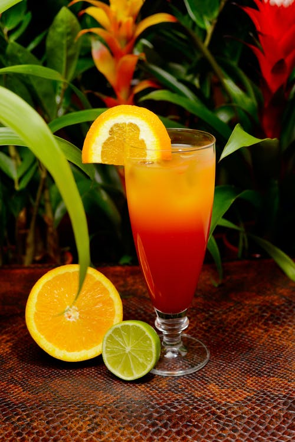

Tequila Sunrise

Ingredients
- 1.5 oz Tequila
- 1 oz. Lime Juice (Fresh-Squeezed Preferred)
- 4 oz. Orange Juice
- 0.5 oz Grenadine
- Orange Slice (for Garnish)
- Maraschino Cherry (for Garnish)
- Ice
Barware
- Collins Glass
- Stirring Spoon
Steps
- Add ice into the Collins Glass.
- Combine liquids in the glass (Tequila, Lime Juice, Orange Juice)
- Stir using the stirring spoon until all liquids are generously combined.
- Hold stirring spoon against glass at an angle. Pour Grenadine down spoon. Do not stir.
- Top with orange slice and cherry for garnish.
Return to Main